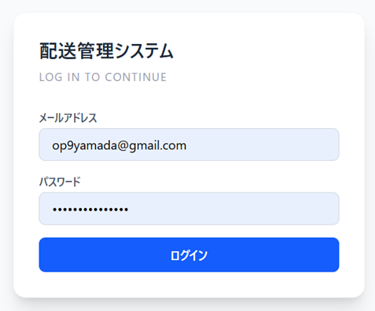
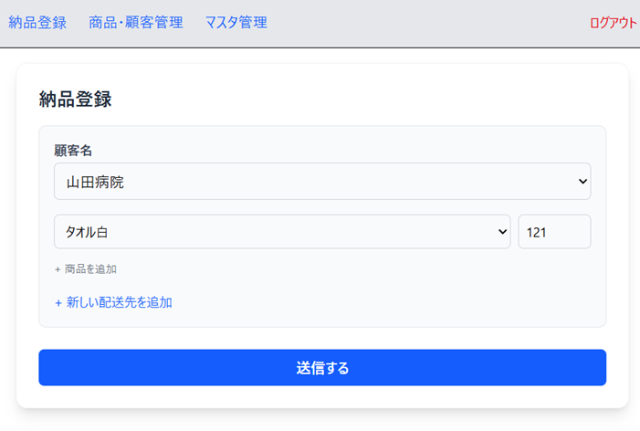
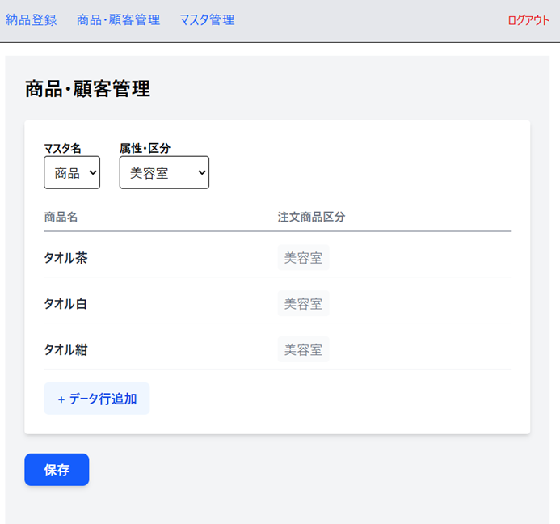
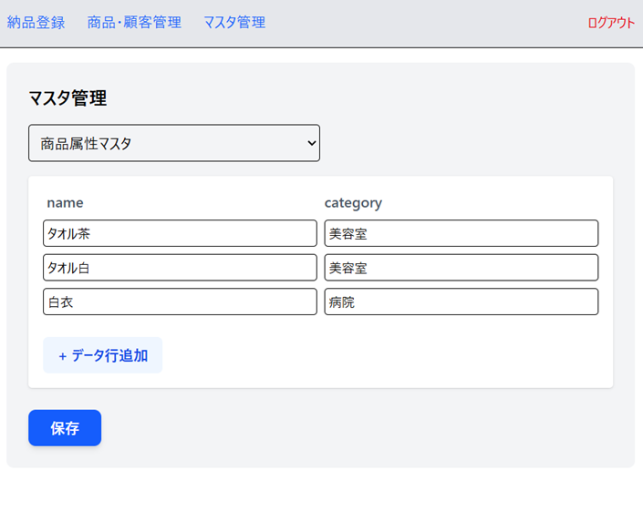

  <h3 style="color: #2c3e50;">6.プロトタイプ（Figma）と実装（実際の画面）</h3>
  <ul style="padding-left: 20px;">
    <li>実装前にFigmaでUIの解像度を上げることで、迷いのない開発プロセスを実現しました。</li>
    <li>現場の業務フローを可視化（画面設計）してからコードを書くことで、手戻りのない設計ができました。</li>
  </ul>
</div>

<div style="font-family: 'Arial', sans-serif; line-height: 1.6; color: #333; max-width: 800px; margin: auto;">
  <h2 style="border-bottom: 2px solid #2c3e50; padding-bottom: 10px; color: #2c3e50;">主要画面機能一覧</h2>
<div style="border: 1px solid #e5e7eb; padding: 20px; border-radius: 12px; box-shadow: 0 4px 6px -1px rgba(0, 0, 0, 0.1);">
  <h3 style="margin-top: 0;">UI/UX プロトタイプ（実際の画面）</h3>
  <div style="display: flex; gap: 10px; overflow-x: auto;">
    
    
  </div>
</div>
<div style="border: 1px solid #e5e7eb; padding: 20px; border-radius: 12px; box-shadow: 0 4px 6px -1px rgba(0, 0, 0, 0.1);">
  <div style="display: flex; gap: 10px; overflow-x: auto;">
    
    
  </div>
</div>
